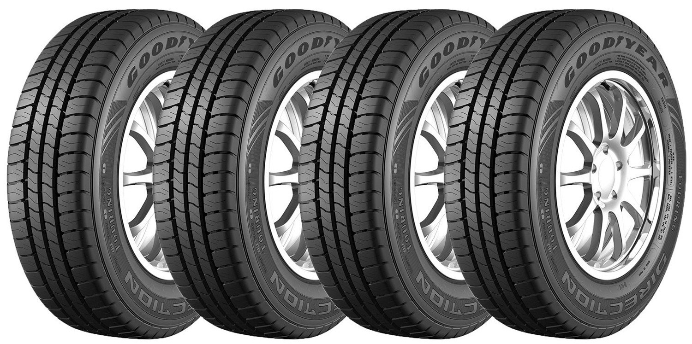
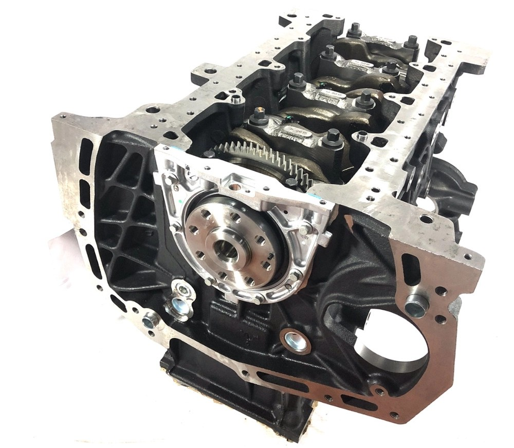
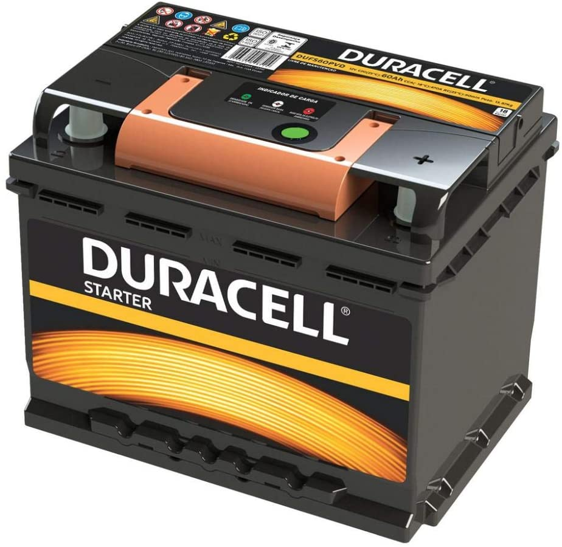

|

Pneu Aro 13” Goodyear 175/70R13 82TO Pneu da linha Direction Touring 175/70R13 é ideal para você que busca um produto com ótima qualidade, segurança, tração e custo benefício! Ele possui uma estrutura em borracha super resistente, aro 13'' e medida 175/70R13 tornando-o ainda mais útil. Esse modelo foi desenvolvido especialmente para carros como Gol, Palio e Uno. O índice de carga deste pneu é de 82T, esse número corresponde ao peso máximo que um pneu pode suportar quando é inflado corretamente, sendo assim quanto maior o número do índice de carga do pneu, maior a capacidade de carga. A marca Goodyear dá um show quando o requisito é qualidade! R$199,90 |
|

Motor Parcial 2.8 200cv Automatica Original Gm Cod.ref. S10Aplicacao: S10 /Trailblazer S10 2014 a 2017 Trailblazer 2014 a 2017 Nome: Motor Parcial 2.8 200cv Automatica Original Gm Marca: Original GM Motor Parcial 2.8 Diesel Original GM Os Motores parciais Genuínos GM são produzidos pelas fábricas de motores da General Motors. Todos os Motores Parciais tem altíssima qualidade e equipam todos os veículos da linha Chevrolet nos quatro cantos do mundo. A montagem feita na fábrica da GM garante a qualidade do Motor Parcial que vem montado com bloco, árvore de manivelas, anéis, pistões, bielas, bronzinas. Peças passam por aprovação de diversos pontos de controle de qualidade ao longo da sequência de montagem, garantindo os torques e o correto funcionamento das partes no conjunto. O motor parcial original GM utilizam matérias primas novas, sem alterações em suas propriedades e dimensões originais. Em outras palavras, trata-se de um motor novo, como de um veículo zero km. R$ 9.990,00 |
|

Bateria Duracell 60Ah – DUFS60PVDBateria Duracell 60 amperes 12v - Livre de Manutenção (Selada) Cód: DUFS60PVD Padrão internacional de qualidade para atender os consumidores e motoristas mais exigentes. A marca que é sinônimo de energia e durabilidade oferece uma linha completa de baterias automotivas fabricadas seguindo os padrões de qualidade internacionais para que você tenha o melhor produto para o seu carro. Conheça um pouco sobre como as baterias Duracell são projetadas e fabricadas. Toda a Linha de Bateria Duracell 60Ah é homologada sob os requisitos do Inmetro A Duracell é referência em energia e uma das marcas mais valiosas do mundo. A Tudor é reconhecida pela qualidade e tecnologia. Juntas, iremos levar ao mercado brasileiro a melhor e mais completa linha de baterias automotivas. Principais Aplicações*: Bateria Duracell 60Ah 12v DUFS60PVD: Positivo Direito Alfa Romeo: 145, 155 BMW: 318 Cherry: Cielo Citroen: Berlingo, Bx, Xantia, Xm, Zx Daewoo: Espero, Leganza, Nubira Fiat: Brava, Marea, Palio ( Opc Elét ), Tipo, Uno ( Opc Elét ) Ford: Ecosport 2.0, Escort ( 93/03 ), Focus 2.0, Verona, Versailles GM: Astra, Corsa ( Opc Elét ), Ipanema, Kadett, Malibu, Meriva, Montana, Monza, Omega 2.0, Prisma ( Opc Elét ), S-10 ( 01/ ), Blazer (01/), Tigra, Tracker, Vectra, Zafira Hyundai: Accent (92/01) Jac Motors: J3, J5, J6 Jeep: MJSV12 Jpx: Montez, Pick-Up Kia: Sephia, Shuma Mazda: Mpv, Mx-3, Mx-5, Protegé Mercedes: Classe A Renault: R19, R21, Clio, Express, Laguna, Megane Seat: Córdoba, Ibiza, Inca Subaru: Forester, Imprenza, Legacy Troller: T4 (gas) VW: Apolo, Gol ( 87/06), Golf, Kombi (05/), Logus, Pointer, Parati, Pólo Classic, Santana, Quantun, Saveiro, Voyage. *Recomendamos a confirmação no veículo Características Técnicas: - Grades com liga de Chumbo-Cálcio resultando menor consumo d' água e maior resistência a corrosão. - Massa ativa com aditivos que aumentam área de reação resultando em maior desempenho elétrico e maior número de ciclos (vida útil). - Separador de Polietileno envelopado. R$389,90 |